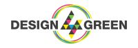

Informations générales
- Cadre : Quatrième année d'études
- Structure : ESAIP
- Date : Novembre 2021
Résumé du challenge
Le Design4Green est un challenge international 48h non-stop dont le but est d'éco-concevoir une solution numérique. Notre équipe les Mi-Cuits avons remporté la première place pour l'édition de 2021.
Cette année le sujet était la création d'une interface reprenant les 491 bonnes pratiques de conception responsable de services numériques. L'interface devait permettre à un utilisateur de sélectionner les bonnes pratiques adaptées à son projet. Une fois les bonnes pratiques validées, l'interface devait afficher la liste des bonnes pratiques dans l'ordre chronologique de réalisation. Une version téléchargeable devait être disponible.
Voici le lien vers notre site : Design4Green - Team 13. (L'hébergement appartenant aux organisateurs du challenge, il se peut que le site ne soit plus disponible.)
Tâches réalisées
- Spécification des besoins
- Choix des besoins en fonction du sujet
- Cadrage du projet pour se limiter aux besoins essentiels
- Conception de la solution
- Choix des technologies les moins gourmandes en ressources pour réaliser la solution
- Choix de la disposition des éléments dans une optique d'accessibilité
- Définition et vérification de la validation de 49 bonnes pratiques
- Rédaction d'un compte rendu pour expliquer les choix faits lors de la réalisation du challenge
- Communication tout au long du challenge sur Twitter
Compétences développées
Compétences métier
- Réalisation des étapes de spécification et de conception d'un projet
- Définition formelle des besoins
- Prise en compte de la dimension éco-responsable
- Rédaction d'un compte rendu
- Expliquer en détail les étapes de le réalisation du projet
- Argumenter sur l'application des bonnes pratiques
Compétences comportementales
Durant ce challenge j'ai continué de développer ma capacité à travailler en équipe. En effet, nous avons su nous répartir les tâches en fonction de nos compétences dès les premières minutes. De plus, nous avons fait preuve de cohésion durant toute la durée du challenge afin d'avancer sur la création de la solution de façon efficace.
La deuxième compétence que j'ai pu développer est mon esprit critique. En effet, notre travail devait être réévalué en continu pour être sûr qu'il corresponde au cahier des charges du challenge.